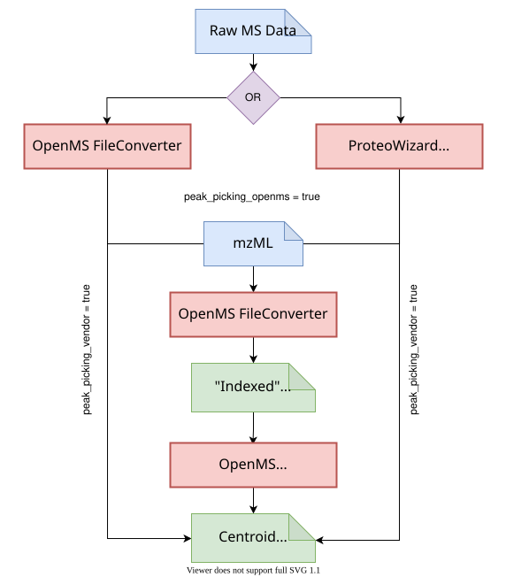

MS data conversion
ProteoWizard msconvert prepares supported acquisition files as mzML for searching and quantitation. Existing mzML input bypasses conversion.

Open the original flowchart at full size.

How it works
- Read the acquisition CSV and locate each file and any required WIFF scan companion.
- Convert vendor data with ProteoWizard. OpenMS FileConverter is an alternative for formats it supports.
- Apply the selected peak-picking and indexing settings. Vendor peak picking and indexing are enabled by default in SpectroMesa-DDA; OpenMS PeakPickerHiRes is disabled.
- Pass the converted files through search, validation, quantitation, and QC.
Inputs and outputs
The input manifest is generated from your acquisition CSV. Converted mzML files retain their original basenames when unique within each sample. If a sample repeats a basename, fraction suffixes distinguish the outputs. Conversion also produces manifests recording the resulting acquisition paths.
Keep mzML as the output format
output_format is already mzML. Keep it unchanged because the remaining analysis steps require mzML files. This conversion route accepts files; it does not add support for Bruker acquisition directories.
Parameter reference
Use the convert_MSData block inside params. Defaults below describe this step as launched by SpectroMesa-DDA. “Not set; tool default” means no override is passed. Automatically supplied values do not need to be repeated.
Analysis settings
| Parameter | Type | Default / supplied value | Meaning |
|---|---|---|---|
convert_algorithm |
Text | ProteoWizard | The algorithm used for conversion. Must be either 'OpenMS' or 'ProteoWizard'. Defaults to 'ProteoWizard'. |
output_format |
Text | mzML | Output mass-spectrometry data format. |
peak_picking_openms |
Boolean | false | Whether to run PeakPickerHiRes from OpenMS. |
peak_picking_vendor |
Boolean | true | Whether to use vendor peak picking. |
pwiz_extra_args |
Text | --64 | Extra arguments to be passed to MSConvert (e.g. '--zlib', '--zlib --64 --inten64'). |
run_index |
Boolean | true | Whether to run the indexing step for the output file using OpenMS' FileConverter command to clean up and update file version. |
save_intermediate_files |
Boolean | false | Publish additional intermediate files for inspection. Final outputs and execution logs are retained independently. |
Software and containers
| Parameter | Type | Default / supplied value | Meaning |
|---|---|---|---|
docker_image_openms |
Text | ghcr.io/theboutroslab/openms-thirdparty:3.5.0 | Container image for openms. Change only to a compatible image. |
docker_image_pwiz |
Text | chambm/pwiz-skyline-i-agree-to-the-vendor-licenses:3.0.21258-ae984af | Container image for pwiz. Change only to a compatible image. |
openms_version |
Text | 3.5.0 | Version used for output labeling and default container selection. |
pwiz_version |
Text | 3.0.21258-ae984af | Version used for output labeling and default container selection. |
Automatically supplied settings
| Parameter | Type | Default / supplied value | Meaning |
|---|---|---|---|
input_csv |
Path | Generated acquisition manifest | Path to the input CSV file. |
output_dir |
Path | Assigned within the analysis output | Destination for this step. Set the shared output_dir for the complete analysis. |
Computing and temporary files
The shared parameter reference explains these settings. This pipeline declares: apptainer_cache, apptainer_library, base_resource_update, max_cpus, max_memory, min_cpus, min_memory, resource_allocation_profile_tag, singularity_cache, singularity_library, ucla_cds, work_dir.
The tables were checked against the individual pipeline configuration, its tool modules, and the SpectroMesa-DDA settings that select this workflow.
Related steps
Overview · Shared parameters · Configuring an analysis · Understanding results